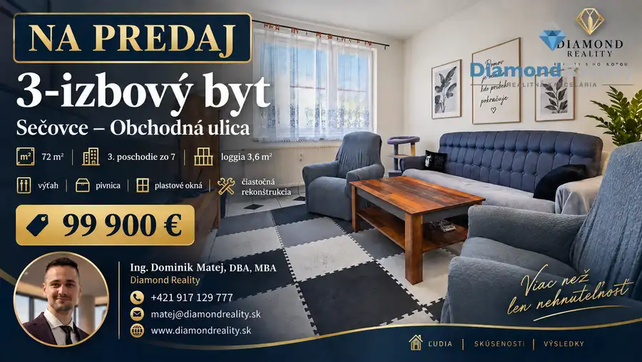
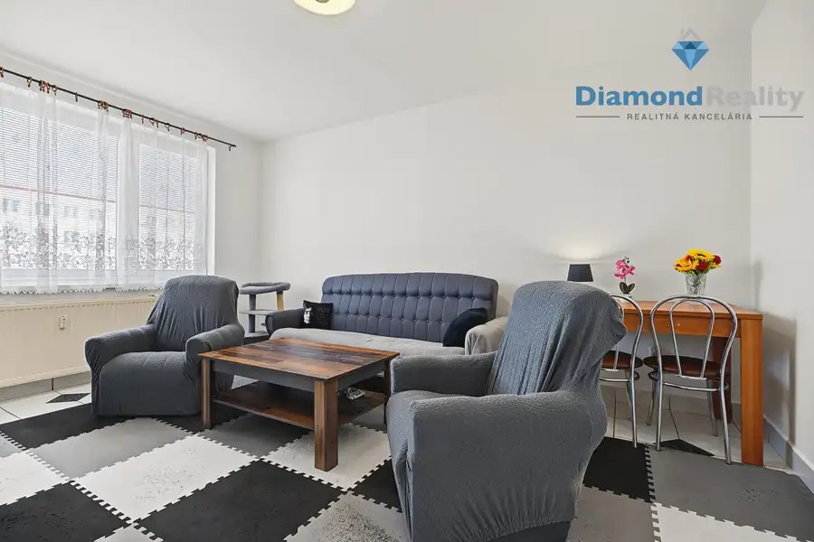
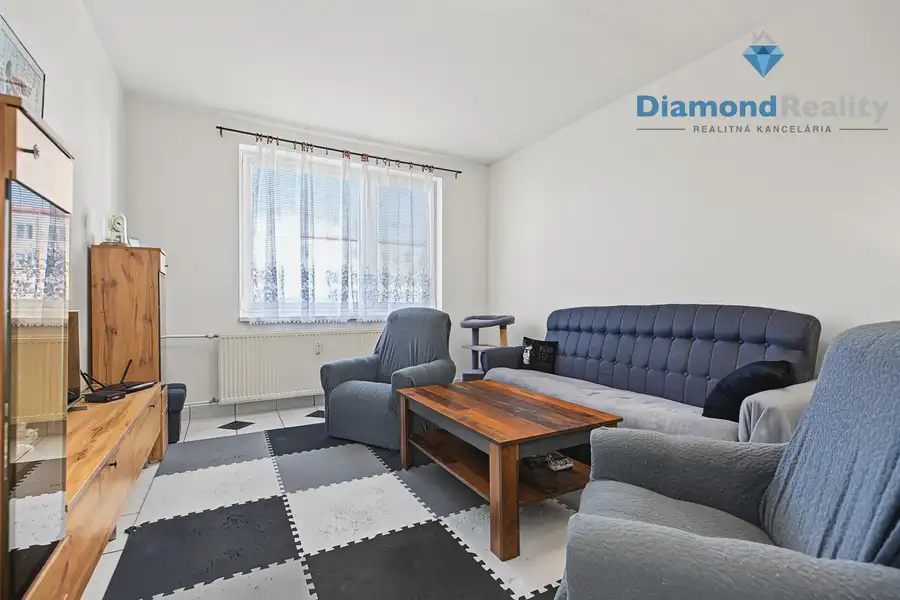
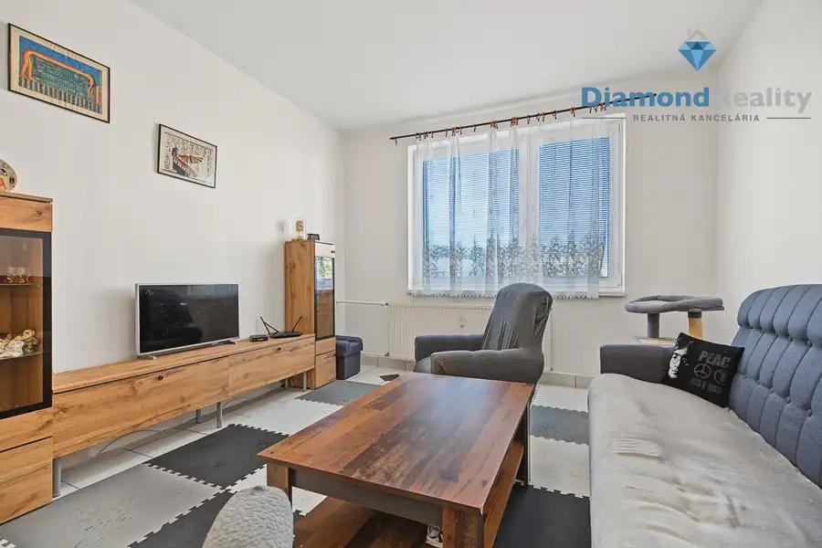
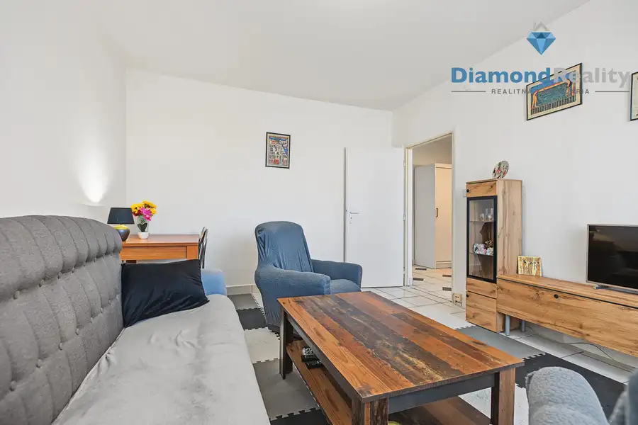
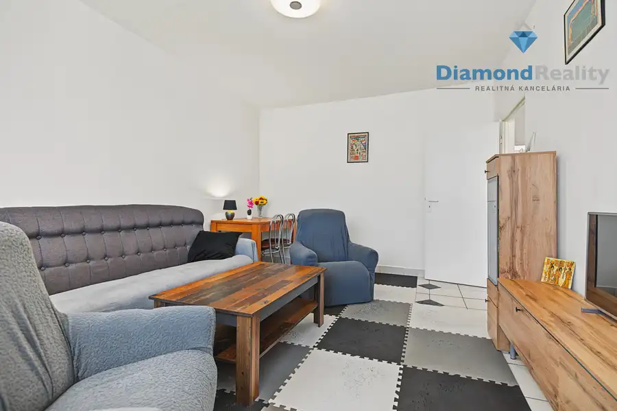
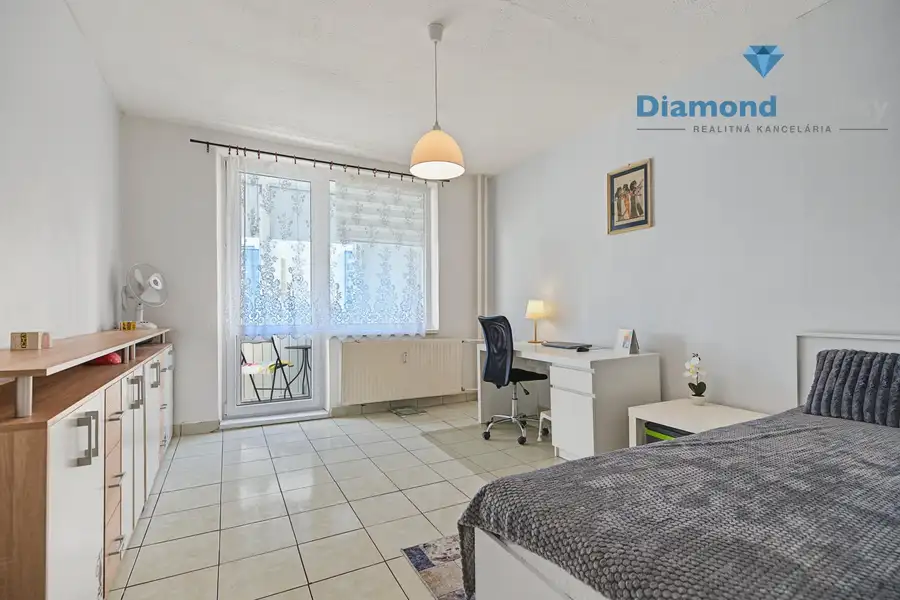
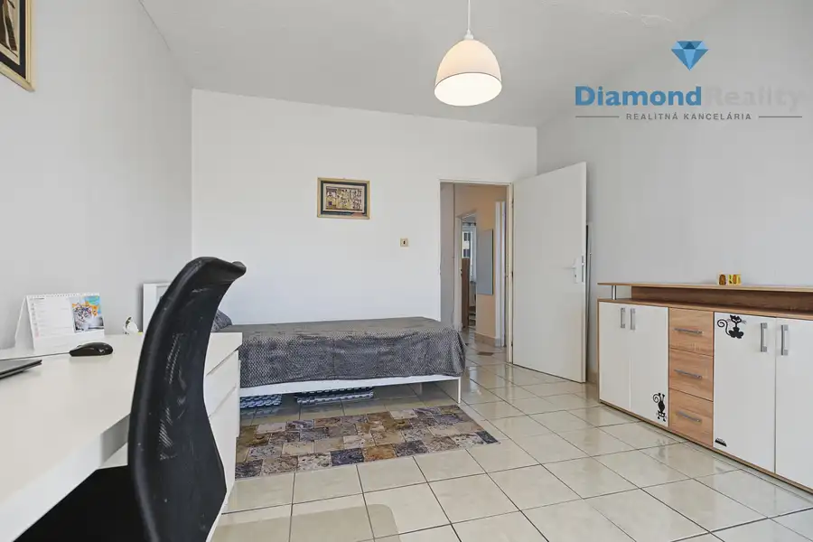
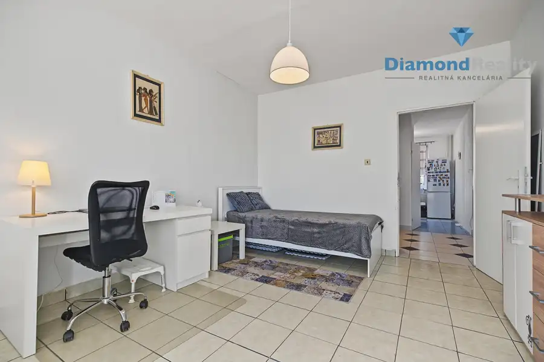
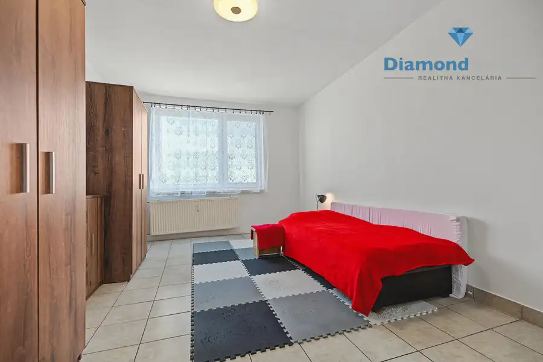

Na predaj priestranný 3-izbový byt s loggiou
Sečovce










- Dispozícia3-izbový
- Plocha69 m²
- Poschodie3.
- StavČiastočná rekonštrukcia
- VlastníctvoOsobné
O nehnuteľnosti
🏡 NA PREDAJ | PRIESTRANNÝ 3-IZBOVÝ BYT S LOGGIOU | SEČOVCE – OBCHODNÁ ULICAPonúkame na predaj priestranný 3-izbový byt s loggiou na Obchodnej ulici v Sečovciach.Byt s výmerou 72 m² sa nachádza na 3. poschodí zo 7 v bytovom dome s výťahom. Je po čiastočnej rekonštrukcii, v rámci ktorej bolo prerobené bytové jadro, má plastové okná a svojou veľkorysou výmerou a praktickou dispozíciou ponúka príjemné bývanie pre rodinu aj dostatok priestoru na ďalšie úpravy podľa predstáv nového majiteľa.Veľkou výhodou bytu sú všetky tri nepriechodné izby, ktoré zabezpečujú dostatok súkromia pre jednotlivých členov domácnosti.Byt má obojstrannú orientáciu SV/JZ, vďaka čomu ponúka príjemné prirodzené presvetlenie počas dňa.Byt sa predáva zariadený.DispozíciaByt pozostáva z:• obývacej izby• 2 samostatných spální• samostatnej kuchyne• predsiene• kúpeľne• samostatného WCK bytu patrí loggia s výmerou 3,6 m², na ktorú je vstup priamo zo spálne.Súčasťou bytu je taktiež pivnica.Bytový dom je vybavený výťahom.📍 LokalitaObchodná ulica ponúka praktické mestské bývanie s veľmi dobrou občianskou vybavenosťou.V blízkom okolí sa nachádzajú školy, materská škola, potraviny, obchody a služby, lekárne, zdravotná starostlivosť a ďalšia občianska vybavenosť.Výhodou je aj dobrá dostupnosť centra Sečoviec a dopravné spojenie smerom na Košice, Trebišov a Michalovce.Vďaka svojej výmere, trom nepriechodným izbám a praktickej dispozícii je byt vhodný najmä pre rodinu, prípadne aj ako investičná nehnuteľnosť určená na prenájom.Základné údaje3 izby • 72 m² • 3. poschodie zo 7 • výťah • loggia 3,6 m² • vstup na loggiu zo spálne • pivnica • čiastočná rekonštrukcia • prerobené bytové jadro • plastové okná • všetky izby nepriechodné • orientácia SV/JZ💰 Cena: 99 900 €V prípade záujmu o bližšie informácie alebo obhliadku ma neváhajte kontaktovať.💎 Diamond RealityIng. Dominik Matej, DBA, MBA📞 +421 917 129 777📧 matej@diamondreality.sk🌐 www.diamondreality.sk
Parametre
- Cellar area
- 2 m²
- Cena vrátane energií
- Nie
- Druh
- 3 izbový byt
- Dátum zverejnenia
- 23. 09. 2026
- Orientácia
- Juhozápadná, Severovýchodná
- Plocha lodžie
- 3 m²
- Podlažie
- 3
- Stav nehnuteľnosti
- Čiastočná rekonštrukcia
- Typ
- Predaj
- Typ konštrukcie
- Panelová
- Vlastníctvo
- Osobné
- Vybavenie
- Lodžia, Pivnica, Verejné parkovanie, Výťah
- Vykurovanie
- Ústredné
- Úžitková plocha
- 69 m²